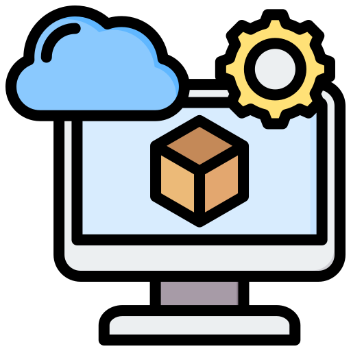

Mes Compétences

HTML

CSS

JavaScript

Python
LINUX cmd

VMware
LINUX
WIRESHARK
CISCO PACKET TRACER

SQL
Salut ! Je m'appelle Omar Talibi, j'ai 20 ans et je suis actuellement étudiant en BTS SIO, option SISR (Solutions d’Infrastructure, Systèmes et Réseaux) en première année. Passionné par l’informatique et les nouvelles technologies, je développe mes compétences en administration système, réseaux et cybersécurité. J’aime apprendre en pratiquant, et c’est pourquoi je travaille sur différents projets techniques et web. Mon objectif est de maîtriser les infrastructures informatiques et de devenir un expert en gestion des systèmes et réseaux.
HTML
CSS
JavaScript
Python
LINUX cmd
VMware
LINUX
WIRESHARK
CISCO PACKET TRACER
SQL
Années d’études : 2024 - 2026
Diplôme obtenu : BTS SIO SISR
Années d’études : 2 ans (BAC+2)
Description : BTS relativement récent (depuis 2011), il est dédié aux services informatiques aux organisations (SIO). Appelé, de par sa spécialité, SISR (Solutions d'infrastructure, systèmes et réseaux), ce BTS de deux ans vous amène à comprendre et à participer à la production ainsi qu' à la fourniture des services informatiques. Vous adaptez et assurez le fonctionnement optimal des réseaux et des systèmes d'exploitation des entreprises, notamment.
Entreprise :
Année :
Description :
Description :
Téléchargez mon CV pour en savoir plus sur mon parcours et mes compétences.
üìÑ T√©l√©charger mon CV